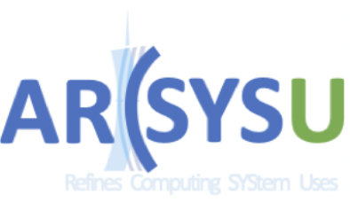

School of Computer Science & Engineering
Sun Yat-sen University
Guangzhou, China
51005

|
Associate Professor
School of Computer Science & Engineering Sun Yat-sen University Guangzhou, China 51005 |
|
Xianwei is an Associate Professor at Sun Yat-sen University. During 2017-2020, he worked in AMD Inc. (Research, RTG) on hardware and software designs for compute-optimized GPUs. He completed his Ph.D in the Computer Science Department at University of Pittsburgh, and obtained his Bachelor's degree from Northwestern Polytechnical University. More info can be found in LinkedIn.
Topics: GPU, Memory System, Compiling, HPC, Intelligent Computing, Simulation/Modeling/Profiling
Xianwei's research interests lie broadly in hardware and software co-designs to improve the performance and efficiency of computing systems.
A particular emphasis is on GPU computing and memory system design around the critical aspects of latency, energy and bandwidth, etc.
Welcome to join arcSYSu (ARChitecture and SYStem Upscaling @ SYSU)

[people @ arcSYSu, refining computing system uses]
- Class of 2022:
Zejia Lin,
Chun-yu Chen,
Tianyu Guo,
Tianyi Zhang,
Zhaowen Shan,
Yuhao Gu (co-advise),
- Class of 2021: Kan Wu,
Yinchuan Guo,
Lianghong Huang
- Class of 2020: Yue Weng (co-advise)
- Alumni: Tianao Ge (ms2022, HKUST-GZ),
Zewei Mo (ms2022, Intel)
- Undergraduate
§ DCS3013 - Computer Architecture, [2022f].
§ DCS290 - Compilation Principle, [2022s, 2021s].
- Graduate
§ DCS5637 - Advanced Computer Architecture, [2021f, 2022f].
[ see full publication list ]
- Conference/Journal
§ [MEMSYS'20]. X. Zhang and E. Shcherbakov, DELTA: Validate GPU Memory Profiling with Microbenchmarks
§ [IISWC'19]. T. Ta, X. Zhang, A. Gutierrez and B. Beckmann, Autonomous Data-Race-Free GPU Testing
§ [HPCA'18]. A. Gutierrez, B. Beckmann, A. Dutu, J. Gross, M. LeBeane, J. Kalamatianos, O. Kayiran, M. Poremba, B. Potter, S. Puthoor, M. Sinclair, M. Wyse, J. Yin, X. Zhang, A. Jain, and T. Rogers. Lost in Abstraction: Pitfalls of Analyzing GPUs at the Intermediate Language Level.
§ [PACT'17]. X. Zhang, Y. Zhang, B. Childers and J. Yang, DrMP: Mixed Precision-aware DRAM for High Performance Approximate and Precise Computing
§ [HPCA'16]. X. Zhang, Y. Zhang, B. Childers and J. Yang, Restore Truncation for Performance Improvement in Future DRAM Systems
§ [DATE'15]. X. Zhang, Y. Zhang, B. Childers and J. Yang, Exploiting DRAM Restore Time Variations in Deep Sub-micron Scaling
§ [ISLPED'13]. X. Zhang, L. Jiang, Y. Zhang, C. Zhang and J. Yang, WoM-SET: Lowering Write Power of Proactive-SET based PCM Write Strategy Using WoM Code (Best Paper Award)
- Thesis
§ [PhD'17]. Addressing Prolonged Restore Challenges in Further Scaling DRAMs [slides (pdf), pptx]
- Honors/Awards
§ [2019] AMD® Spotlight Award
§ [2016] Andrew Mellon Fellowship
§ [2013] Best Paper Award of ISLPED
§ [2009] Tencent® Technology Excellence Scholarship
- Services
§ [ERC] MICRO (IEEE/ACM Int'l Sym. on Microarchitecture) - 2020
§ [TPC] ICCD (IEEE Int’l Conf. on Computer Design) - 2020, 2019, 2018